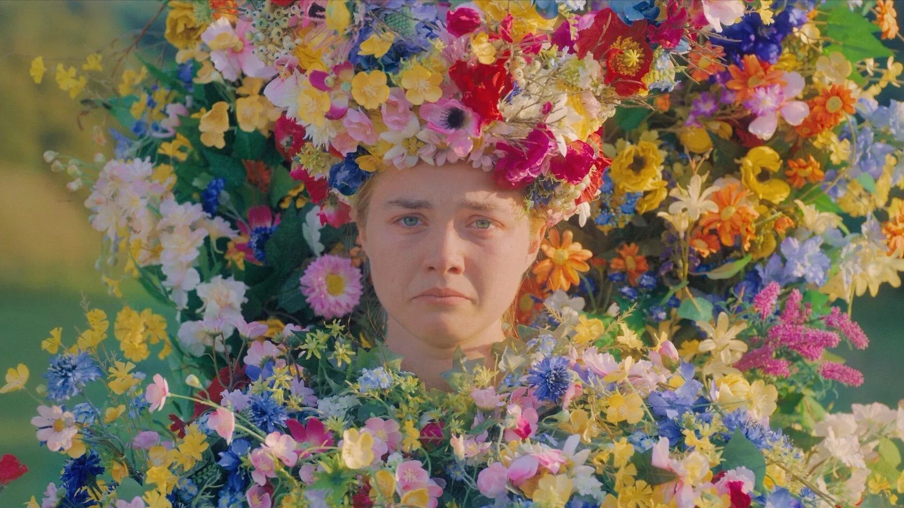
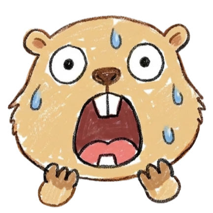

Midsommar
この映画の怖さはいくつかの要素が組み合わさっています。それぞれを事前に知っておくことで、心の準備ができます。
儀式関連で動物描写があります。直接メインではありませんが、苦手な方は少し注意してください。
これを知っておけば少し楽に観られます。タイムスタンプ付きで危険ポイントをご案内。

【ラスト】主人公ダニーは村の"メイクイーン"となり、最後の生贄を選ぶ立場になる。
【真相】村は代々続くカルト共同体。外部から来た若者たちは最初から儀式の生贄候補だった。
【生存情報】ダニーのみ生存。しかし精神的には完全に共同体へ取り込まれたとも解釈できる終わり方。
【後味】彼氏クリスチャンの最低さが積み重なっていたこともあり、最後の焼却シーンで"妙なスッキリ感"を覚える人も多い。ただ、その感覚自体が作品の怖さでもある。
| タイトル | ミッドサマー（Midsommar） |
|---|---|
| 公開年 | 2019年 |
| 監督 | アリ・アスター |
| 主演 | フローレンス・ピュー |
| 制作国 | アメリカ合衆国 / スウェーデン |
| 上映時間 | 147分 |